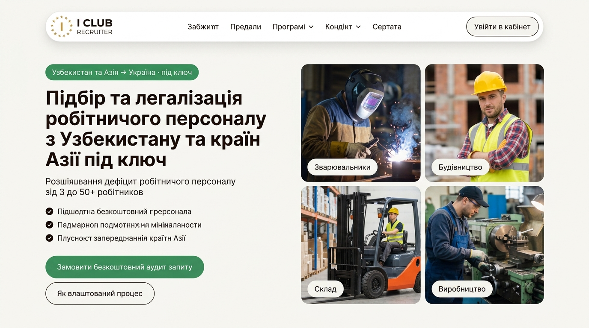
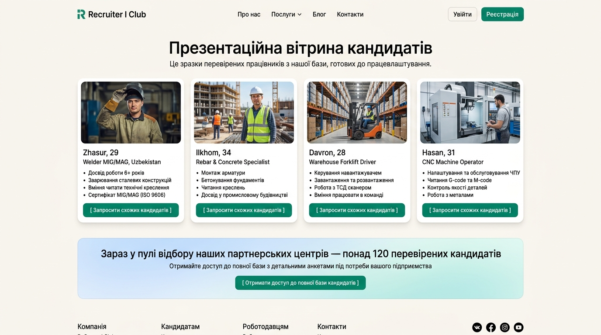
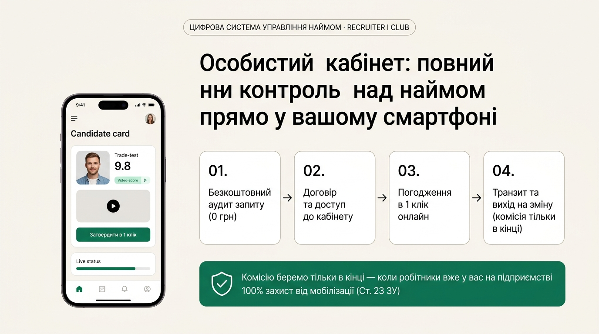

Адаптація архітектури Asia Work строго під наш blueprint: наш фірмовий логотип I CLUB RECRUITER, сітка різних професій у Hero, презентаційна вітрина 4 карток з лід-магнітом та особистий кабінет з 4 етапами.
• Шапка: Наш затверджений логотип зірки I CLUB RECRUITER, плаваючий скляний острівець, навігація та пряма кнопка «Увійти в кабінет».
• Ліва колонка: Точний текст за планом: «Підбір та легалізація робітничого персоналу з Узбекистану та країн Азії під ключ», підзаголовок про дефіцит від 3 до 50+ робітників, 3 буліти довіри та дві кнопки: [ Замовити безкоштовний аудит запиту ] + [ Як влаштований процес ].
• Права колонка: Замість одного працівника — гармонійна сітка з 4 різних спеціальностей: Зварювальники, Будівництво, Склад, Виробництво. Повний фокус на закритті будь-якої потреби.

• Строго за маркетинговою стратегією: Це саме демо-вітрина (не публічна база). 4 живі типові картки (Жасур, Ільхом, Даврон, Хасан) у спецовках з реальними характеристиками.
• Цільова дія на кожній картці: Кнопка [ Запросити схожих кандидатів ], яка веде у форму замовлення потрібної спеціальності.
• Лід-магніт під вітриною: Широка статус-панель: «Зараз у пулі відбору наших партнерських центрів — понад 120 перевірених кандидатів» з кнопкою [ Отримати доступ до повної бази кандидатів ], яка конвертує лід у CRM.

• Зліва: Акуратний смартфон із реальним інтерфейсом кабінету: картка кандидата, бал Trade-Test (9.8), відеоплеєр та кнопка «[ Затвердити в 1 клік ]».
• Справа: 4 горизонтальні картки етапів зі стрілками за нашим планом (01. Безкоштовний аудит ➔ 02. Договір та кабінет ➔ 03. Погодження в 1 клік ➔ 04. Транзит і прибуття на зміну).
• Знизу: Головний заспокійливий щит: «Комісію беремо тільки в кінці — коли робітники вже у вас на підприємстві · 100% захист від мобілізації (Ст. 23 ЗУ)».

Оцініть ці 3 екрани у вашому браузері. Чи відповідає це нашій стратегії та затвердженому плану?